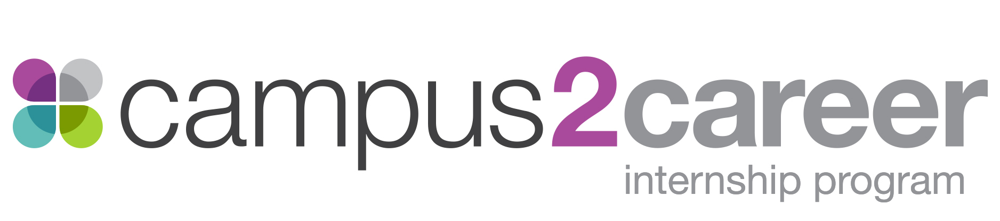

We call it ’symphony’ - it’s synergy done right - all our businesses working together to support one goal.

NBCUniversal produce award winning content on NBC, USA, Bravo, E!, Syfy, Golf, Olympics, and many more stations, but to produce this content NBCUniversal has to have a strong network of departments to keep the productions up and running. Departments like environmental health & safety, security & crisis management, global facility operations, transportation, retail operations, energy programs and food services. All big names for different departments that keep NBCUniversal running on all cilendars!
NBCUniversal is rated in the top ten companies to intern again. There is good reason for this. Our interns gain unparalleled access into the world of live and post production. But the options are not limited to production! Under the O&TS umbrella there is Information technology, advanced media engineering, on-air operations, studio operations and many more! To see a list of all the departments and descriptions click here. If you’re majoring in broadcast engineering, audio engineering, computer science, network management then this internship is for you!
NBCUniversal has a great atmosphere of open collaboration and camaraderie. We take our business seriously, but do not take ourselves too seriously. Everyone who works here loves TV and media. Our passion is providing top-notch content to the viewer in whatever ways we can. As we grow our businesses together, we will not just anticipate the future, but rather create, invent and deliver it.
NBCUniversal is looking for students looking who want the chance to learn media from one of the leaders in the field. Team players, upbeat, passionate people are our some traits of the ideal person. But that’s is not to say we won’t hire quite, isolated people. We expect a lot out of our interns. You will not be doing the typical coffee or copy runs. Our interns are given projects that have real impact on the company. Projects like, designing a multi-viewer to monitor our TV Everywhere streams, or Security Architecture training. What separates O&TS interns from other divisions and other companies is one O&TS is awesome to work for and second every intern is treated like a member of the team with their own unique project. No other intern is doing the same project or work as you.
I’m working in Advanced Media Engineering, it’s a long name that means we focus on creating technology for NBCU to progress into the future of broadcast. Right now the team is focused on TV Everywhere, the push from the major entertainment companies to provide TV via the internet. I really enjoyed my time, working on my projects and meeting the awesome people in my department. The projects I was handed were difficult and challenged me to think of new and unique ways to tackle them. - Benjamin Garverick, 2015 Summer Intern, Englewood Cliffs
Working at NBCU in Entertainment Technology has been a very fulfilling experience. To be able to contribute to and develop new applications that will be used to drive the business forward by people throughout the company is an amazing feeling. You really get a feel of the corporate world and the Campus 2 Career team is always putting together awesome events to help you grow individually while having fun at the same time. - Harout Grigoryan, 2015 Summer Intern, Universal City
Working at NBCU in Entertainment Technology has been a very fulfilling experience. To be able to contribute to and develop new applications that will be used to drive the business forward by people throughout the company is an amazing feeling. You really get a feel of the corporate world and the Campus 2 Career team is always putting together awesome events to help you grow individually while having fun at the same time. - Harout Grigoryan, 2015 Summer Intern, Universal City